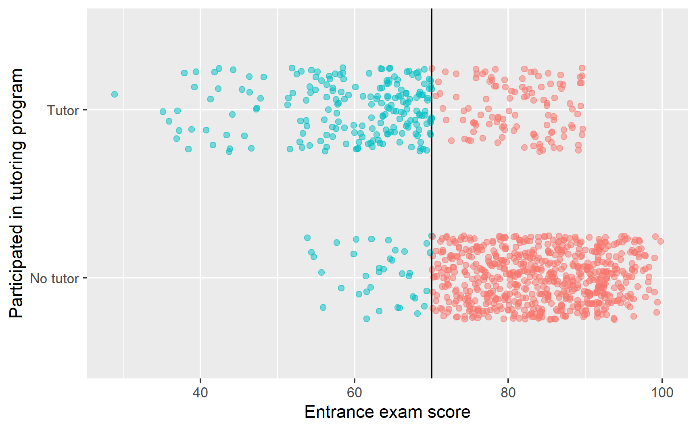
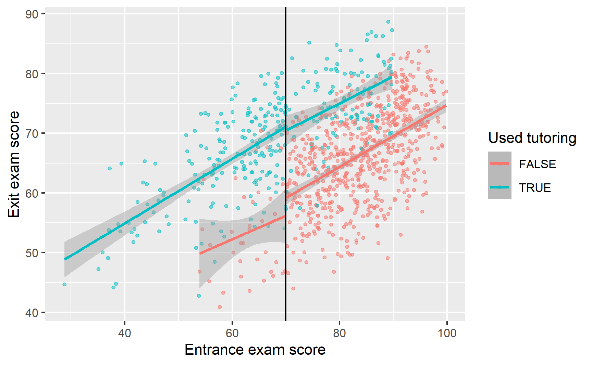
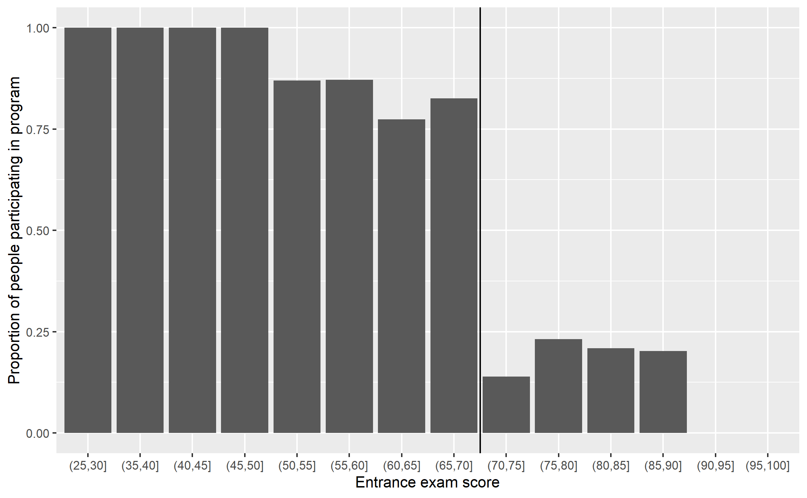

library(tidyverse) # ggplot(), %>%, mutate(), and friendslibrary(broom) # Convert models to data frameslibrary(rdrobust) # For robust nonparametric regression discontinuitylibrary(estimatr) # Run 2SLS models in one step with iv_robust()library(modelsummary) # Create side-by-side regression tableslibrary(kableExtra) # Fancy table formattingtutoring <-read_csv("data/tutoring_program_fuzzy.csv")
Noncompliance around a cutoff
In the example for regression discontinuity, it was fairly easy to measure the size of the jump at the cutoff because compliance was perfect. No people who scored above the threshold used the tutoring program, and nobody who qualified for the program didn’t use it. It was a sharp design, since program usage looked like this:
However, seeing a cutoff this sharp and this perfect is fairly rare. It is possible that some people scored higher on the entrace exam and somehow used tutoring, or that some people scored below the threshold but didn’t participate in the program, either because they’re never-takers, or because they fell through bureaucratic cracks.
More often, you’ll see compliance that looks like this:
Code
ggplot(tutoring, aes(x = entrance_exam, y = tutoring_text, color = entrance_exam <=70)) +# Make points small and semi-transparent since there are lots of themgeom_point(size =1.5, alpha =0.5,position =position_jitter(width =0, height =0.25, seed =1234)) +# Add vertical linegeom_vline(xintercept =70) +# Add labelslabs(x ="Entrance exam score", y ="Participated in tutoring program") +# Turn off the color legend, since it's redundantguides(color ="none")

We can see the count and percentages of compliance with group_by() and summarize():
Here we have 36 people who should have used tutoring who didn’t (either because they’re never-takers and are anti-program, or because the system failed them), and we have 116 people (!!!) who somehow snuck into the program. That should probably be a big red flag for the program administrators. That means that 36.5% of people in the tutoring program shouldn’t have been there. Big yikes.
This is definitely not a sharp design. This is a fuzzy regression discontinuity.
Visualizing a fuzzy gap
With regular sharp RD, our goal is to measure the size of the gap or discontinuity in outcome right at the cutoff. In our sharp example we did this with different parametric regression models, as well as with the rdrobust() function for nonparametric measurement.
Regular parametric regression won’t really work here because we have strange compliance issues:
Code
ggplot(tutoring, aes(x = entrance_exam, y = exit_exam, color = tutoring)) +geom_point(size =1, alpha =0.5) +# Add a line based on a linear model for the people scoring less than 70geom_smooth(data =filter(tutoring, entrance_exam <=70), method ="lm") +# Add a line based on a linear model for the people scoring 70 or moregeom_smooth(data =filter(tutoring, entrance_exam >70), method ="lm") +geom_vline(xintercept =70) +labs(x ="Entrance exam score", y ="Exit exam score", color ="Used tutoring")

There’s still a visible gap at 70, but there are people who did and did not use the program on both sides of the cutoff.
Another way to look at this is to make a sort of histogram that shows the probability of being in the tutoring program at different entrance exam scores. 100% of people who score between 25 and 50 on the exam used tutoring, so that’s good, but then the probability of tutoring drops to ≈80ish% up until the cutpoint at 70. After 70, there’s a 10–15% chance of using tutoring if you’re above the threshold.
If this were a sharp design, every single bar to the left of the cutpoint would be 100% and every single bar to the right would be 0%, but that’s not the case here. The probability of tutoring changes at the cutpoint, but it’s not 100% perfect.
Code
# This fun code uses cut() to split the entrance exam column into distinct# categories (0-5, 5-10, 10-15, etc.). You'll see some strange syntax in the# categories it creates: (70, 75]. These ranges start with ( and end with ] for# a reason: ( means the range *does not* include the number, while ] means that# the range *does* include the number. (70, 75] thus means 71-75. You can# reverse that with an argument to cut() so taht it would do [70, 75), which# means 70-74.tutoring_with_bins <- tutoring %>%mutate(exam_binned =cut(entrance_exam, breaks =seq(0, 100, 5))) %>%# Group by each of the new bins and tutoring statusgroup_by(exam_binned, tutoring) %>%# Count how many people are in each test bin + used/didn't use tutoringsummarize(n =n()) %>%# Make this summarized data wider so that there's a column for tutoring and no tutoringpivot_wider(names_from ="tutoring", values_from ="n", values_fill =0) %>%rename(tutor_yes =`TRUE`, tutor_no =`FALSE`) %>%# Find the probability of tutoring in each bin by taking# the count of yes / count of yes + count of nomutate(prob_tutoring = tutor_yes / (tutor_yes + tutor_no))# Plot this puppyggplot(tutoring_with_bins, aes(x = exam_binned, y = prob_tutoring)) +geom_col() +geom_vline(xintercept =8.5) +labs(x ="Entrance exam score", y ="Proportion of people participating in program")

Measuring a fuzzy gap
So how do we actually measure this gap, given all the compliance issues? Recall from Session 12 that instruments let us isolate causal effects for just compliers: they let us find the complier average causal effect, or CACE.
No! In this case, the instrument is fairly easy and straightforward: we create a variable that indicates if someone is above or below the threshold. That’s all. This variable essentially measures what should have happened rather than what actually happened.
Surprisingly, it meets all the qualifications of an instrument too:
Relevance (\(Z \rightarrow X\) and \(\operatorname{Cor}(Z, X) \neq 0\)): The cutoff causes access to the tutoring program.
Exclusion (\(Z \rightarrow X \rightarrow Y\) and \(Z \nrightarrow Y\) and \(\operatorname{Cor}(Z, Y | X) = 0\)): The cutoff causes exit exam scores only through the tutoring program.
Exogeneity (\(U \nrightarrow Z\) and \(\operatorname{Cor}(Z, U) = 0\)): Unobserved confounders between the tutoring program and exit exam scores are unrelated to the cutoff.
Fuzzy parametric estimation
Let’s make an instrument! We’ll also center the running variable just like we did with sharp regression discontinuity:
Now we have a new column named below_cutoff that we’ll use as an instrument. Most of the time this will be the same as the tutoring column, since most people are compliers. But some people didn’t comply, like person 8 here who was not below the cutoff but still used the tutoring program.
Before using the instrument, let’s first run a model that assumes the cutoff is sharp. As we did with the sharp parametric analysis, we’ll include two explanatory variables:
Here, the coefficient for tutoringTRUE shows the size of the jump, which is 11.5. This means that participating in the tutoring program causes an increase of 11.5 points on the final exam for people in the bandwidth.
BUT THIS IS WRONG. This is not a sharp discontinuity, so we can’t actually do this. Instead, we need to run a 2SLS model that includes our instrument in the first stage, which will then remove the endogeneity built into participation in the program. We’ll estimate this set of models:
We could manually run the first stage model, generate predicted tutoring and then use those predicted values in the second stage model like we did in the instrumental variables example, but that’s tedious and nobody wants to do all that work. We’ll use iv_robust() from the estimatr package instead.
Based on this model, using below_cutoff as an instrument, we can see that the coefficient for tutoringTRUE is different now! It’s 9.74, which means that the tutoring program causes an average increase of 9.74 points on the final exam for compliers in the bandwidth.
Notice that last caveat. Because we’re working with regression discontinuity, we’re estimating a local average treatment effect (LATE) for people in the bandwidth. Because we’re working with instrumental variables, we’re estimating the LATE for compliers only. That means our fuzzy regression discontinuity result here is doubly robust.
If we compare this fuzzy result to the sharp result, we can see a sizable difference:
Code
# gof_omit here will omit goodness-of-fit rows that match any of the text. This# means 'contains "IC" OR contains "Low" OR contains "Adj" OR contains "p.value"# OR contains "statistic" OR contains "se_type"'. Basically we're getting rid of# all the extra diagnostic information at the bottommodelsummary(list("No instrument (wrong)"= model_sans_instrument,"Fuzzy RD (bw = 10)"= model_fuzzy),gof_omit ="IC|Log|Adj|p\\.value|statistic|se_type",stars =TRUE) %>%# Add a background color to row 5row_spec(5, background ="#F5ABEA")
We can also use nonparametric methods to measure the size of the fuzzy gap at the cutoff. We’ll use rdrobust() just like we did in the sharp example. The only difference is that we have to add one extra argument. That’s it!
To do fuzzy estimation with rdrobust(), use the fuzzy argument to specify the treatment column (or tutoring in our case). Importantly (and confusingly! this took me waaaaay too long to figure out!), you do not need to specify an instrument (or even create one!). All you need to specify is the column that indicates treatment status—rdrobust() will do all the above/below-the-cutoff instrument stuff behind the scenes for you.
Code
rdrobust(y = tutoring$exit_exam, x = tutoring$entrance_exam,c =70, fuzzy = tutoring$tutoring) %>%summary()## Warning in rdrobust(y = tutoring$exit_exam, x = tutoring$entrance_exam, : Mass points detected in the running variable.## Fuzzy RD estimates using local polynomial regression.## ## Number of Obs. 1000## BW type mserd## Kernel Triangular## VCE method NN## ## Number of Obs. 237 763## Eff. Number of Obs. 162 331## Order est. (p) 1 1## Order bias (q) 2 2## BW est. (h) 12.336 12.336## BW bias (b) 18.466 18.466## rho (h/b) 0.668 0.668## Unique Obs. 155 262## ## First-stage estimates.## ## =============================================================================## Method Coef. Std. Err. z P>|z| [ 95% C.I. ] ## =============================================================================## Conventional -0.670 0.077 -8.686 0.000 [-0.821 , -0.518] ## Robust - - -7.376 0.000 [-0.862 , -0.500] ## =============================================================================## ## Treatment effect estimates.## ## =============================================================================## Method Coef. Std. Err. z P>|z| [ 95% C.I. ] ## =============================================================================## Conventional 9.351 2.140 4.369 0.000 [5.156 , 13.545] ## Robust - - 3.642 0.000 [4.289 , 14.282] ## =============================================================================
That’s all! Using nonparametric methods, with a triangular kernel and a bandwidth of ±12.96, the causal effect of the tutoring program for compliers in the bandwidth is 9.683.
---title: "Fuzzy regression discontinuity"---```{r setup, include=FALSE}knitr::opts_chunk$set(fig.width =6, fig.asp =0.618, fig.align ="center",fig.retina =3, out.width ="75%", collapse =TRUE)set.seed(1234)options("digits"=2, "width"=150)options(dplyr.summarise.inform =FALSE)```## Program backgroundIn this example, we'll use the same situation that we used in the [the example for regression discontinuity](/example/rdd.qmd):- Students take an entrance exam at the beginning of the school year- If they score 70 or below, they are enrolled in a free tutoring program- Students take an exit exam at the end of the yearIf you want to follow along, download this dataset and put it in a folder named `data`:- [{{< fa table >}} `tutoring_program_fuzzy.csv`](/files/data/generated_data/tutoring_program_fuzzy.csv)```{r include=FALSE, warning=FALSE, message=FALSE}library(tidyverse)library(broom)library(rdrobust)library(estimatr)library(modelsummary)library(kableExtra)tutoring <-read_csv(here::here("files", "data", "generated_data", "tutoring_program_fuzzy.csv"))``````{r eval=FALSE}library(tidyverse) # ggplot(), %>%, mutate(), and friendslibrary(broom) # Convert models to data frameslibrary(rdrobust) # For robust nonparametric regression discontinuitylibrary(estimatr) # Run 2SLS models in one step with iv_robust()library(modelsummary) # Create side-by-side regression tableslibrary(kableExtra) # Fancy table formattingtutoring <-read_csv("data/tutoring_program_fuzzy.csv")```## Noncompliance around a cutoffIn [the example for regression discontinuity](/example/rdd.qmd), it was fairly easy to measure the size of the jump at the cutoff because compliance was perfect. No people who scored above the threshold used the tutoring program, and nobody who qualified for the program didn't use it. It was a *sharp* design, since program usage looked like this:```{r echo=FALSE, out.width="75%"}knitr::include_graphics("/example/rdd_files/figure-html/check-fuzzy-sharp-1.png", error =FALSE)```However, seeing a cutoff this sharp and this perfect is fairly rare. It is possible that some people scored higher on the entrace exam and somehow used tutoring, or that some people scored below the threshold but didn't participate in the program, either because they're never-takers, or because they fell through bureaucratic cracks.More often, you'll see compliance that looks like this:```{r fuzzy-compliance}ggplot(tutoring, aes(x = entrance_exam, y = tutoring_text, color = entrance_exam <=70)) +# Make points small and semi-transparent since there are lots of themgeom_point(size =1.5, alpha =0.5,position =position_jitter(width =0, height =0.25, seed =1234)) +# Add vertical linegeom_vline(xintercept =70) +# Add labelslabs(x ="Entrance exam score", y ="Participated in tutoring program") +# Turn off the color legend, since it's redundantguides(color ="none")```We can see the count and percentages of compliance with `group_by()` and `summarize()`:```{r}tutoring %>%group_by(tutoring, entrance_exam <=70) %>%summarize(count =n()) %>%group_by(tutoring) %>%mutate(prop = count /sum(count))```Here we have 36 people who should have used tutoring who didn't (either because they're never-takers and are anti-program, or because the system failed them), and we have 116 people (!!!) who somehow snuck into the program. That should probably be a big red flag for the program administrators. That means that 36.5% of people in the tutoring program shouldn't have been there. Big yikes.This is definitely not a sharp design. This is a fuzzy regression discontinuity.## Visualizing a fuzzy gapWith regular sharp RD, our goal is to measure the size of the gap or discontinuity in outcome right at the cutoff. [In our sharp example](/example/rdd.qmd#step-4-check-for-discontinuity-in-outcome-across-running-variabl) we did this with different parametric regression models, as well as with the `rdrobust()` function for nonparametric measurement.Regular parametric regression won't really work here because we have strange compliance issues:```{r check-outcome-fuzzy-discontinuity, message=FALSE}ggplot(tutoring, aes(x = entrance_exam, y = exit_exam, color = tutoring)) +geom_point(size =1, alpha =0.5) +# Add a line based on a linear model for the people scoring less than 70geom_smooth(data =filter(tutoring, entrance_exam <=70), method ="lm") +# Add a line based on a linear model for the people scoring 70 or moregeom_smooth(data =filter(tutoring, entrance_exam >70), method ="lm") +geom_vline(xintercept =70) +labs(x ="Entrance exam score", y ="Exit exam score", color ="Used tutoring")```There's still a visible gap at 70, but there are people who did and did not use the program on both sides of the cutoff.Another way to look at this is to make a sort of histogram that shows the probability of being in the tutoring program at different entrance exam scores. 100% of people who score between 25 and 50 on the exam used tutoring, so that's good, but then the probability of tutoring drops to ≈80ish% up until the cutpoint at 70. After 70, there's a 10–15% chance of using tutoring if you're above the threshold.If this were a sharp design, every single bar to the left of the cutpoint would be 100% and every single bar to the right would be 0%, but that's not the case here. The probability of tutoring changes at the cutpoint, but it's not 100% perfect.```{r fuzzy-binned, fig.width=8}# This fun code uses cut() to split the entrance exam column into distinct# categories (0-5, 5-10, 10-15, etc.). You'll see some strange syntax in the# categories it creates: (70, 75]. These ranges start with ( and end with ] for# a reason: ( means the range *does not* include the number, while ] means that# the range *does* include the number. (70, 75] thus means 71-75. You can# reverse that with an argument to cut() so taht it would do [70, 75), which# means 70-74.tutoring_with_bins <- tutoring %>%mutate(exam_binned =cut(entrance_exam, breaks =seq(0, 100, 5))) %>%# Group by each of the new bins and tutoring statusgroup_by(exam_binned, tutoring) %>%# Count how many people are in each test bin + used/didn't use tutoringsummarize(n =n()) %>%# Make this summarized data wider so that there's a column for tutoring and no tutoringpivot_wider(names_from ="tutoring", values_from ="n", values_fill =0) %>%rename(tutor_yes =`TRUE`, tutor_no =`FALSE`) %>%# Find the probability of tutoring in each bin by taking# the count of yes / count of yes + count of nomutate(prob_tutoring = tutor_yes / (tutor_yes + tutor_no))# Plot this puppyggplot(tutoring_with_bins, aes(x = exam_binned, y = prob_tutoring)) +geom_col() +geom_vline(xintercept =8.5) +labs(x ="Entrance exam score", y ="Proportion of people participating in program")```## Measuring a fuzzy gapSo how do we actually measure this gap, given all the compliance issues? Recall from Session 12 that *instruments* let us isolate causal effects for just compliers: they let us find [the complier average causal effect, or CACE](/example/cace.qmd).But what should we use as an instrument? Do we use something weird like [the Scrabble score of people's names](http://ftp.iza.org/dp7725.pdf)? Something [overused like rainfall](https://papers.ssrn.com/sol3/papers.cfm?abstract_id=3715610)?No! In this case, the instrument is fairly easy and straightforward: we create a variable that indicates if someone is above or below the threshold. That's all. This variable essentially measures *what should have happened* rather than what actually happened.Surprisingly, it meets all the qualifications of an instrument too:- **Relevance** ($Z \rightarrow X$ and $\operatorname{Cor}(Z, X) \neq 0$): The cutoff causes access to the tutoring program.- **Exclusion** ($Z \rightarrow X \rightarrow Y$ and $Z \nrightarrow Y$ and $\operatorname{Cor}(Z, Y | X) = 0$): The cutoff causes exit exam scores *only through* the tutoring program.- **Exogeneity** ($U \nrightarrow Z$ and $\operatorname{Cor}(Z, U) = 0$): Unobserved confounders between the tutoring program and exit exam scores are unrelated to the cutoff.### Fuzzy parametric estimationLet's make an instrument! We'll also center the running variable just like we did with sharp regression discontinuity:```{r make-instrument}tutoring_centered <- tutoring %>%mutate(entrance_centered = entrance_exam -70,below_cutoff = entrance_exam <=70)tutoring_centered```Now we have a new column named `below_cutoff` that we'll use as an instrument. Most of the time this will be the same as the `tutoring` column, since most people are compliers. But some people didn't comply, like person 8 here who was *not* below the cutoff but still used the tutoring program.Before using the instrument, let's first run a model that assumes the cutoff is sharp. As we did with [the sharp parametric analysis](/example/rdd.qmd#parametric-estimation), we'll include two explanatory variables:$$\text{Exit exam} = \beta_0 + \beta_1 \text{Entrance exam score}_\text{centered} + \beta_2 \text{Tutoring program} + \epsilon$$We'll use a bandwidth of 10:```{r model-wrong}# Bandwidth ±10model_sans_instrument <-lm(exit_exam ~ entrance_centered + tutoring,data =filter(tutoring_centered, entrance_centered >=-10& entrance_centered <=10))tidy(model_sans_instrument)```Here, the coefficient for `tutoringTRUE` shows the size of the jump, which is 11.5. This means that participating in the tutoring program *causes* an increase of 11.5 points on the final exam for people in the bandwidth.**BUT THIS IS WRONG.** This is *not* a sharp discontinuity, so we can't actually do this. Instead, we need to run a 2SLS model that includes our instrument in the first stage, which will then remove the endogeneity built into participation in the program. We'll estimate this set of models:$$\begin{aligned}\widehat{\text{Tutoring program}} &= \gamma_0 + \gamma_1 \text{Entrance exam score}_\text{centered} + \gamma_2 \text{Below cutoff} + \omega \\\text{Exit exam} &= \beta_0 + \beta_1 \text{Entrance exam score}_\text{centered} + \beta_2 \widehat{\text{Tutoring program}} + \epsilon\end{aligned}$$We could manually run the first stage model, generate predicted `tutoring` and then use those predicted values in the second stage model [like we did in the instrumental variables example](/example/iv.qmd), but that's tedious and nobody wants to do all that work. We'll use `iv_robust()` from the **estimatr** package instead.```{r model-fuzzy}model_fuzzy <-iv_robust( exit_exam ~ entrance_centered + tutoring | entrance_centered + below_cutoff,data =filter(tutoring_centered, entrance_centered >=-10& entrance_centered <=10))tidy(model_fuzzy)```Based on this model, using `below_cutoff` as an instrument, we can see that the coefficient for `tutoringTRUE` is different now! It's 9.74, which means that the tutoring program *causes* an average increase of 9.74 points on the final exam **for compliers in the bandwidth**.Notice that last caveat. Because we're working with regression discontinuity, we're estimating a local average treatment effect (LATE) for people in the bandwidth. Because we're working with instrumental variables, we're estimating the LATE for compliers only. That means our fuzzy regression discontinuity result here is *doubly robust*.If we compare this fuzzy result to the sharp result, we can see a sizable difference:```{r show-fuzzies, warning=FALSE}# gof_omit here will omit goodness-of-fit rows that match any of the text. This# means 'contains "IC" OR contains "Low" OR contains "Adj" OR contains "p.value"# OR contains "statistic" OR contains "se_type"'. Basically we're getting rid of# all the extra diagnostic information at the bottommodelsummary(list("No instrument (wrong)"= model_sans_instrument,"Fuzzy RD (bw = 10)"= model_fuzzy),gof_omit ="IC|Log|Adj|p\\.value|statistic|se_type",stars =TRUE) %>%# Add a background color to row 5row_spec(5, background ="#F5ABEA")```We can (and should!) [do all the other things that we talked about in the regression discontinuity example](/example/rdd.qmd#parametric-estimation), like modifying the bandwidth, adding polynomial terms, and so forth to see how robust the finding is. But we won't do any of that here.### Fuzzy nonparametric estimationWe can also use nonparametric methods to measure the size of the fuzzy gap at the cutoff. We'll use `rdrobust()` just like we [did in the sharp example](/example/rdd.qmd#nonparametric-estimation-1). The only difference is that we have to add one extra argument. That's it!To do fuzzy estimation with `rdrobust()`, use the `fuzzy` argument to specify the treatment column (or `tutoring` in our case). **Importantly** (and confusingly! this took me waaaaay too long to figure out!), you ***do not*** need to specify an instrument (or even create one!). All you need to specify is the column that indicates treatment status—`rdrobust()` will do all the above/below-the-cutoff instrument stuff behind the scenes for you.```{r rdrobust-fuzzy}rdrobust(y = tutoring$exit_exam, x = tutoring$entrance_exam,c =70, fuzzy = tutoring$tutoring) %>%summary()```That's all! Using nonparametric methods, with a triangular kernel and a bandwidth of ±12.96, the causal effect of the tutoring program for compliers in the bandwidth is 9.683.We can (and should!) [do all the other nonparametric robustness checks that we talked about in the regression discontinuity example](/example/rdd.qmd#nonparametric-estimation), like modifying the bandwidth (ideal, half, double) and messing with the kernel (uniform, triangular, Epanechnikov) to see how robust the finding is. But again, we won't do any of that here.